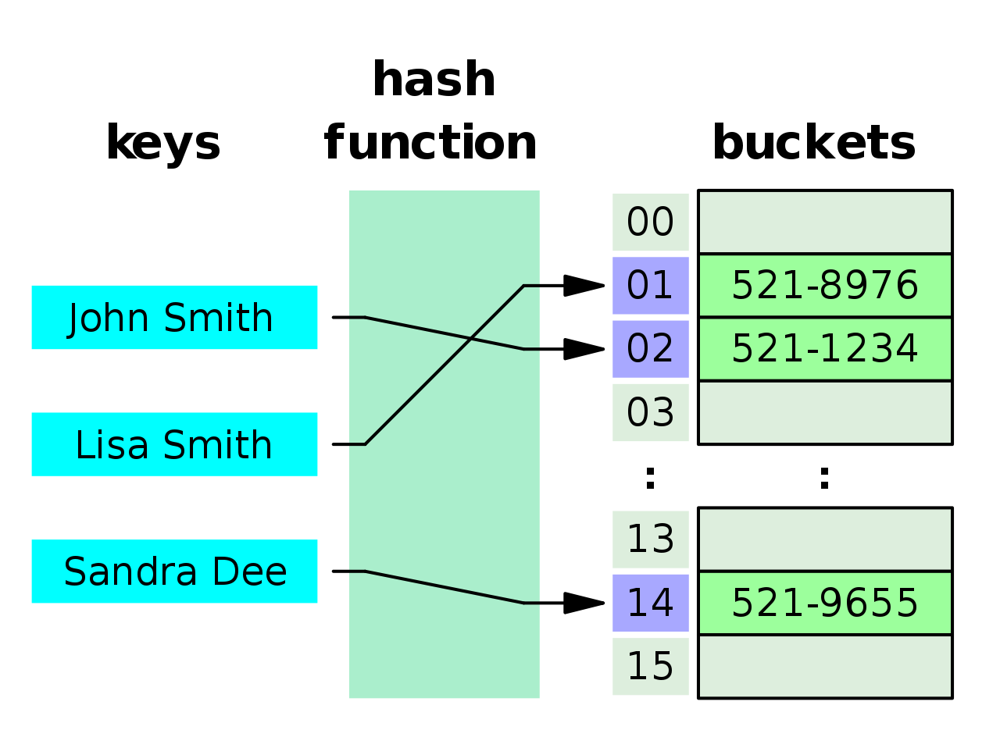
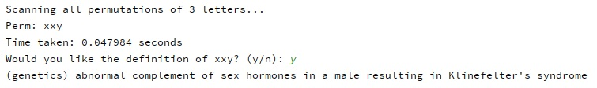
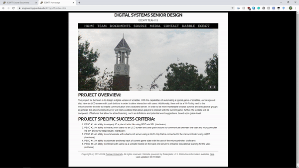

Progress Report for David Dowd
Week 3:
Date: 1/30/20Total hours: 5-6
Description of design efforts:
This week, I spent my time doing research and designing some of the aspects detailed in our Software Overview (written by me, found here when uploaded). Summarily, I delved into the logical flow of the microcontroller (currently, we intend for this to be the STM32F410R8T6), fleshed out some of the finer details regarding the algorithms we expect to implement, and explored the data structures that will be used. Of particular interest to me was the time complexity of the word permutation algorithm that will be utilized when a player requests a word recommendation for the current game of Dabble; more specifically, I discovered the Steinhaus-Johnson-Trotter algorithm during my research and found an academic journal that demonstrates how efficient the aforementioned algorithm is (see below).
Figure 1: Comparing the Performance of Permutational Algorithms [1]
Looking at Figure 1, it is immediately apparent that the Johnson-Trotter algorithm is an exceptional choice for generating word permutations, possessing a constant time complexity of O(n!). It is also of interest to me that the Johnson-Trotter algorithm performs better when applied in brute force rather than a divide and conquer setting until permutation lengths of 10 or more are used (for reference, Dabble will never exceed a length of 7). Regardless of algorithm choice, every generated permutation will need to be checked against a local hash table that stores a dictionary of words - this verification runs in O(1) and is also called during the confirmation state of the microcontroller's logic.

Figure 2: An Example of Hash Table Implementation [2]
Since the server will be running on much more powerful hardware than the STM32F410R8T6 - say, a nearby desktop - I've determined that executing an O(7!) function at worst case should be trivial; consequently, I've spent a bit of time this week planning how I could potentially expand on the word recommendation feature that our design will encompass. I plan to do further research on methods to efficiently scan for ideal locations to place words on the board (accounting for bonus point spaces). Further, if this goal can be reasonably achieved, I plan to look into how to build upon that idea by sorting word candidates by total points they would earn on the board.
As a final note, I assisted in referencing the datasheet for addresses and meaningful flags pertaining to the color sensor prototype that our team set up during lab this week. Later that same night, I assisted Alex in testing the color sensing capabilities of our prototype and presented it with various colors of LED christmas lights.
Sources Cited:
[1] Y. Bassil, “A Comparative Study on the Performance of Permutation Algorithms,” Journal of Computer Science & Research (JCSCR). Available: https://pdfs.semanticscholar.org/585c/c2679e2179dded62562fea1d0a87868647dd.pdf
[2] “Hash table,” Wikipedia, 21-Jan-2020. [Online]. Available: https://en.wikipedia.org/wiki/Hash_table
Week 4:
Date: 2/5/20Total hours: 6
Description of design efforts:
This week, I continued my research on the higher level algorithms our design will be using. I have been more than eager to prototype Dabble's ability to recommend a word to players, so I started with the Steinhaus-Johnson-Trotter implementation used by Rosetta Code (found here) and started developing from there with Python 3.8.
Figure 1: A Snippet of the Steinhaus-Johnson-Trotter Implementation Used [1]
This prototype code runs exceptionally well - in an interpreted language such as Python, no less - so the server (which may be written in a compiled language like C) should ultimately be more than capable of quickly recommending a playable word from the user's pool of tiles. Currently, just as described last week, what I have written is only creating permutations of the player's 7 letters and then searching for the first 7 letter word that can be created from them. If no 7 letter word can be formed, then the algorithm searches for 6 letter words, and so on. Should the script find a suitable word, it reports the time taken to do so and then prompts the user to state whether a definition is desired or not. The process is then finished and my script halts - an example of this process can be seen in Figure 2 (see below).
Figure 2: A Typical Example of How the Algorithm Performs When Called
The worst case for this script is easily tested with a string of letters such as 'zzzzzzz', which takes approximately 5 milliseconds to execute (with print statements). Although this is exactly what I estimated would be the case while writing the Software Overview, I should note that the time complexity of my first idea for permutation was a bit off from O(7!). Initially, I was under the impression that the time complexity of a subsequent 6 letter permutation search would be O(6!), but that logic only takes the permutations of one set of 6 letters (rather than all 6 subsets). With this in mind, my previous approach would have taken roughly 50 milliseconds instead (falling under O((n+1)!) or O(8!)), but I created my own optimization for the algorithm's logic to keep it within O(7!). I have more planning to do when it comes to involving the board state with the word recommendation feature, but I'm hoping that my research and optimizations are useful to that end as our design further develops in the future.
Figure 3: An Example of the Worst Case - No Permuted Words Found
Currently, the Python script that I've written emulates some additional features that are intended to be a part of our design's website (specifically, asking if the player wants the given word's definition or not), as I wanted to comprehensively prototype the dictionary system for our project as well. I have yet to find any kind of dictionary dump that would be useful in a hash lookup setting, so for the sake of prototyping, I've imported a set of defined words from the Natural Language Toolkit, found here. This set is significantly large in length, containing a total of 147,306 defined words (see Figure 4, below).
Figure 4: A Segment of the 147,000+ Word Dictionary Utilized for Prototyping
This imported dictionary is not ideal, as lookup performance may be slower than with a hash. Additionally, one can observe in Figure 4 that there are non-singular words included ('remember_oneself', for example); further, the set includes odd "words" such as 'xxy' (demonstrated in Figure 5) that would be illegal in Dabble. Words falling under the two types described are generally avoided by the script I've written, but the dictionary used in this prototype is clearly not something that we should use in the long term.

Figure 5: An Example of the Prototype's Dictionary Requiring Further Work
I plan to continue brainstorming how the word recommendation feature of Dabble can accurately involve the board's state without being significantly slowed down. I'm also beginning to consider how we can integrate Dabble's website with our team's pre-existing website.
[1] “Permutations by swapping,” Rosetta Code. [Online]. Available: https://rosettacode.org/wiki/Permutations_by_swapping#Python
Week 5:
Date: 2/12/20Total hours: 8
Description of design efforts:
Another week of high level programming related work and research. Despite impending midterms pressing me for time, I have improved and expanded upon a great deal of the prototype code for our project's server. First and foremost: I managed to get my hands on the 2019 edition of the official list of words used for the majority of Scrabble tournament play - "Collin's Dictionary" - which is exceptionally valuable for prototyping (let alone for Dabble itself). I also managed to obtain the definitions for all of these tournament-legal words in a format that's easy for my script to parse. What I have now removes the downsides of last week's dictionary, is twice as large, and can now be of type Dict instead of type Set; summarily, the result is an absolutely comprehensive base dictionary that is hashed for faster lookup times - a previous goal mentioned in Week 3's report. Below is a snippet of the last few words/definitions in the .txt file used to store the current dictionary.
Figure 1: A Segment of the New and Comprehensive 279,000+ Word Tournament Dictionary Being Utilized
Figure 2: Two Examples of the Script's Current Flow with New Features
Last week, my rationale for stopping at the first playable word was to demonstrate a proof of concept more than anything else, so this week I've added a point calculating system that uses Scrabble rules to determine the highest scoring permutation (e.g. 'e' is 1 point, 'z' is 10 points.. also, did you know that using all 7 of your letters in one turn is a "Bingo" for 50 additional points?). Of course, in order to accomplish this, the script must go through every permutation and once more falls under O(8!), finishing in under 50 milliseconds when given 7 letters. Speaking of which, I've incorporated wildcard functionality (via the '*' character) into the script as well, should the player have a blank tile that they don't wish to specify as any letter in particular. With some optimizations, the gigantic increase in permutations this causes doesn't hit performance too hard, albeit there is still an observable ~250 millisecond difference at this time.
I've also started implementing board checking, although this is admittedly far from complete due to the computational complexity of the challenge. I've created a couple of example board representations for testing in this regard (see Figure 3 for one of them - the '#' signs are not a part of the 9x9 board, they are used to prevent out of bounds problems from coming up). So far, I have written the logic of the script to look for blank spaces with at least one neighboring tile that has already been placed. Although a bit difficult to verbally explain, it can then scan for horizontal (left and/or right) and/or vertical (up and/or down) availability adjacent to any of the aforementioned blank spaces. I now need to combine this behavior with permutation generation, word checking, and sequence shifting, when applicable. Ideally, I would like our word recommendation feature to factor the entirety of the board state - point bonuses and all - to give the highest scoring word that can possibly be placed (and where to place it). This may or may not be realistic, but it's what I'm going to be continuing to pursue for now.
Figure 3: Sample Board Array #1 - Some Basic Words and A Thought-Provoking Gap in the Middle. Curious..
Finally, just for fun, here is a sketch I made today of what Dabble's tile layout could look like. This is the layout I am currently using for assigning the board's point bonuses (2L = Double Letter Score, 3W = Triple Word Score, etc). Apparently, the middle star tile is equivalent to 2W! Nifty.
Figure 4: A Possible Dabble Board Layout
Week 6:
Date: 2/19/20Total hours: 8
Description of design efforts:
This week, I have taken some steps toward developing the web page utilized for enabling communication between players, the server, and the Dabble board. I'm not very knowledgeable when it comes to HTML/CSS/JavaScript, but so far I have edited our team's navigation bar to have an additional tab: "DABBLE" (it is the second to last tab on the right, next to ECE477). Clicking on DABBLE redirects to dabble.html, which is really just a placeholder for now (as it currently only contains a WIP word recommendation section). For that, I've set up a form associated with a text box that accepts 7 letters at most. The form's submit button is intended to pass the given text as a string to my recommendation script, but right now it is instead printing the contents therein (so in the meantime, to prevent other students/teams/etc. from seeing my source code, a test.py script is 'called' instead).. I attempted to install server files with scripting capability (e.g. XAMPP, Apache, etc.) to our team's login in order to address this problem during manlab, but that yielded little to no success. I'm still trying to figure this one out.
Figure 1: Dabble's Current Web Page (WIP Placeholder) with Updated Navigation Bar
On a more positive note, however, I've managed to write a working prototype for board checking (word validity). This function is critical to the core of our design because it will be invoked every time a player signals that they have placed their desired word. Generally speaking, the function takes the current board state (passed from the microcontroller to the ESP32, which is then sent to the server containing this code) and checks to see if there are any illegal words. If the player's placed word doesn't invalidate the board, the game progresses as usual and it becomes the next player's turn; if the player's placed word creates illegal words anywhere on the board, the player will be forced to place a new word (which will then be checked again). For the sake of optimization, my prototype for this function compares the current board state against the previous board state to identify newly placed letters. Each newly placed letter is then checked for any neighboring letters (a concept explained in Week 5's progress report); for each neighboring letter, the function additionally checks for neighboring letters along the same axis of the originally checked letter. When all of this is done, my prototype constructs words that the originally checked letter is a part of and checks to see if any words are not in the dictionary in play. I should note that my code accepts ANY board as the 'previous' board state, though - for example, the new board can be checked against an older board (see Figure 2, below) or even an empty one altogether.

Figure 2: An Old Board (left) vs New Board (right)
What I have written takes approximately one millisecond to make a comparison such as the one shown above, so it's safe to say that performance is really good in this department. Assuming communication between the ESP32 and server is acceptably fast, Dabble's word checking functionality should be pretty seamless. Shown below in Figures 3 and 4 are examples of what my board checking script prints.
Figure 3: A Snippet of the Board Checker's Printout (for Leftwards and Upwards cases) and Final Runtime
If you are curious of what the printed tuples mean, they correspond to that letter's North, South, West, and East neighbor status. A value of -1 indicates the board's edge, a value of 0 indicates an empty space, and a value of 1 indicates a neighboring character. In the case of the letter 'r' at newBoard[8][9], the tuple (1, 0, 0, -1) reflects that there is a letter above ('e'), no letter below or to the left, and the board's edge to the right. These tuples are critical to how board checking functions.
Figure 4: An Additional Snippet of the Board Checker's Printout - Downwards, Upwards/Downwards, Leftwards, and Leftwards/Rightwards
I plan to further develop Dabble's website (with scripting) and integrate this week's board checking prototype with word recommendation as I continue to pursue how our project can recommend the perfect word that can be played at any given time.
Week 7:
Date: 2/26/20Total hours: 9
Description of design efforts:
It took a while [and a lot of trial and error.. this stuff was very finicky], but I finally managed to integrate Python server scripting with Dabble's web page this week. Currently, I've separately implemented the word recommendation and board checking scripts as something to test and interact with (see Figure 1 - below - or the Dabble link in the header, above). Performance is great in terms of both runtime and web latency - despite the server having weaker hardware than what I use for development - so I encourage you to try the scripts for yourself!
Figure 1: The Current Dabble Home Page
The word recommender performs as one would expect. The player enters 7 letters (no less, or they will have to try again) and then clicks the submit button. The web server then calls the relevant script - in this case, permuteCheck.py - and generates the highest scoring word, printing the word and it's point count to the website. Currently, the script also prints whether the recommended word scores a bingo as well as it's definition in the used dictionary. I should further note that this script is obviously not factoring any board state into it's logic as of right now, as we do not yet have a designed board to communicate with. An example of what is generated when the player enters '*rewuit' is shown in Figure 2 (remember that a * character is a wildcard that indicates a blank tile).
Figure 2: Word Recommendation for '*rewuit'
Since we don't have a working board to connect to the website with just yet, the placeholder board verification script that I've implemented just checks whether a selected pre-defined board is valid or not by scanning each word for legality and then prints a confirmation/repudiation statement. When Dabble is developed further [and has wireless connectivity], it will instead check the current board state against my script (boardCheck.py) each time a player submits their word with one of the push buttons. In the meantime, though, Figure 3 shows an example of what happens on the website when Board3 is checked for validity.
Figure 3: Board Verification for Option 3
Of course, Board3 is invalid in this case because 'torqu' is not a word in Collin's Dictionary.
Now that I've got our web page up and running, I've been thinking of other features that could be integrated. Dictionary support, likely through the use of radio buttons, is something that we intend the site to offer. Perhaps the web page could also display each letter and it's respective point value as an image somewhere? Word verification and word definition would both be cool to add and wouldn't take much more effort - players could enter their desired word and the site, assisted by my scripts, could utilize the dictionary in play to print out a proper response. Later on, I hope I can learn a little more about HTML/CSS/JavaScript in order to generate a constant image of the current board state on the Dabble website as well. These are all 'for fun' ideas though, so for now I plan to research our chosen ESP32 model with Alex in order to better understand how communication between the server and microcontroller will be achieved.
Week 8:
Date: 3/06/20Total hours: 4
Description of design efforts:
Although I am fairly confident that we aren't expected to produce progress reports this week, I felt it's better to be safe than sorry. Regardless, since this has been a week of midterm review observation and presentation (and because much of the software needed is done for now), I haven't done much this week [and thus, this will be a much shorter and less technical report than I'm adjusted to writing]. This week, I have mostly coordinated with my team to ensure that our presentation was as cohesive as possible. We got a lot of [electrical] critiques on it today - which is to be expected - so there will be some work to be done on that end. Since it was pointed out, Alex and I will be replacing the ESP32-WROOM-32 with an ESP8266 (this is fine, since the breakout board that we have been prototyping this concept with has featured the 8266 on it anyways). This change is partially due to the fact that the WROOM-32 is basically a microcontroller on it's own, which would void the need for our STM32F4. Currently, it has been prototyped to connect to a nearby Wi-Fi signal and then host it's own domain, which can be accessed via IP lookup (a bit user unfriendly, considering Dabble is marketed towards school children, but I digress) through a URL, for example. We expect that I will have to move the server scripting code from this domain (../477grp15) to that of the ESP8266, which may pose other issues, but time will ultimately tell. Namely, I am concerned that the 8266 may not be able to interpret the Python 3 that I have written and that it's clock rate (80 MHz) will be less than ideal for the computations required for acceptable script runtime, but I will work with Alex to wrap up this point of prototyping so we are ready to implement proper Wi-Fi connectivity and hosting when our final PCBs arrive in the coming weeks.

Figure 1: An Example of the ESP32-WROOM-32 Figure 2: An Example of the ESP8266
Week 11:
Date: 3/26/20Total hours: N/A
Description of design efforts:
While COVID-19 has shaken things up for many of us, it [fortunately] has had little to no bearing at all on my responsibilities as the team's high level software engineer. Since programming only requires access to a computer on hand and a stable connection to the Internet, I have all that I need to manage for the rest of the semester (although a great deal of the programming that I am responsible for is already done - wireless communication and game logic are all that require significant work at this point). Further, as Alex is my roommate, establishing communication between the microcontroller and the server through the use of our chosen ESP should be rather painless as well since he will be prototyping the relevant hardware (we can collaborate to this end).
Figure 1: My Workspace (or, in other words, my computer)
As for communication: Our team, since last year, has been communicating through Slack. We will continue to do this!
Currently, Cynthia has pretty much all of the electrical components for our project right now (including the all-in-one kit that we have been provided) since she was able to grab everything from the lab before it was closed, so our team will have to pass them back and forth in the future to facilitate prototyping, integration, finalization, etc. Integration in my case will be fairly lax, since everything I have done - and will do - is self-contained on the server [and the microcontroller, in the case of game logic]. Once the ESP can establish a connection between the two, we just need to write the logic to interpret what information gets sent and received in order for my work to be fully integrated with the project.
Week 12:
Date: 4/01/20Total hours: 6
Description of design efforts:
This week, I've added some dictionary support to the backend of Dabble and polished some of the website's scripting. The website will now remember and display the last radio choice made whenever it is updated (e.g. what dictionary is in play). As far as dictionary support goes, I have added two other dictionaries that can be used for play as well as the option to switch between them at any point in time (see Figure 1, below - again, this can also be tested at any time by navigating to DABBLE in our team website's header). Collin's Dictionary is still what I believe to be the most official dictionary for Dabble, but now players can choose to switch to the Oxford English Dictionary or even an experimental word dump. Obviously, I wouldn't recommend the word dump as a choice to anyone, but it is an interesting option to play with nonetheless. Of course, I had to do some re-writing to allow the word recommendation and board verification scripts to accommodate these changes, but now they all work together seamlessly. It would be possible to add an 'UPLOAD DICTIONARY' button or the like to the website - the server would have to verify the validity of the dictionary before adding it to the list of options - but that falls low on my priority list as of right now. On the subject of the website, I should note two more things: (1) the refresh button at the top exists as a one-time band-aid to switch from dabble.html (initial page) to loadDabble.py in order to display what the website remembers as the current dictionary, and (2) when Dabble is actually created and testable/playable, the board verification placeholder will most likely become a simple button ("Check the current board!") without the radio choices (Boards 1-3), for the inquisitive player that wants to make doubly sure.
Figure 1: Current Iteration of Dabble's Website
Regarding the refresh button - if I can figure out how to make the DABBLE link in the website header redirect to a .py file (instead of .html) without imploding, it will no longer be necessary.. For now, though, it exists as a workaround to what isn't really that big of an issue. And since our ESP8266 is showing promise with connectivity, we may be able to integrate my work with the ESP and micro by next week. Time will tell.

Figure 2: Refresh Button Demonstration
Week 13:
Date: 4/10/20Total hours: 12
Description of design efforts:
Alex and I finally got the opportunity to sit down and spend virtually all of yesterday working on connecting our ESP8266 to our server; while he tracked down the software to flash on it, found the libraries/functions required, and worked on serial implementation, I helped with logic (approach to communicating board state, URL, etc), syntax, and debugging. The end result is an ESP8266 that stores it's associated Wi-Fi access point, password, and base URL to connect to (https://engineering.purdue.edu/477grp15/var/www/cgi-bin/boardCheck.py?board=), only requiring a serial string of 81 characters that represents the board state to be appended to the URL - e.g. attackersn0r0a0000t0a0r000t0ism0robe00human0l000s0k00l00never0e0rot0000r000000000 - where 0s represent blank spaces. Our microcontroller will send these 81 characters based on it's stored data structure to the ESP8266 via UART, where the ESP will then connect to the concatenated URL (https://engineering.purdue.edu/477grp15/var/www/cgi-bin/boardCheck.py?board=attackersn0r0a0000t0a0r000t0ism0robe00human0l000s0k00l00never0e0rot0000r000000000) and serially return a 1 for SUCCESS/valid or a 0 for FAILURE/invalid based on the output of my board checking script. The microcontroller will then handle the return appropriately, calculating points and advancing the turn count on success or requiring a different word from the player on failure. Now that we have established a link between the server and our hardware, everything has effectively been prototyped [save the 9x9 photodiode array, I suppose] and we are clear to begin integrating systems together.
Naturally, I had to do a lot of rewriting and bug testing for my scripts and the website's HTML to accomodate these changes in communication and functionality. A few particularly annoying errors have been eliminated and I redesigned the contents falling under Dabble Board Verifier so it is no longer a placeholder (but I've posted enough pictures of that part of our team's website, so please refer here if you wish to see the current iteration of my work). Chiefly, the website's board verification now tests the current board state that is stored on the server instead of preset boards, which is a really big step in the right direction. It will either accept a value of 1 (passed by the submit button on the website) or an 81 character string (typically utilized by the ESP8266 but can also be typed by hand on a web browser) and then update the current and previous board states where warranted. Further, I took the time to create from scratch a method of generating a live-updating image of the current board for the website (a goal of mine that I detailed in Week 7's report), which can be seen below in Figure 1.
Figure 1: Live-Updating Image of the Board State (Style is based on my mockup image from Week 5's report)
By "live-updating," I do mean that this image will automatically change when the server's saved board state changes - so, if someone were to enter a URL that the board verification script returns as valid (e.g. https://engineering.purdue.edu/477grp15/var/www/cgi-bin/boardCheck.py?board=attackersn0r0a0000t0a0r000t0ism0robe00human0l000s0k00l00never0e0rot0000r00000000s or something like that) then the stored board would update, triggering this image to change as well. It's really neat and the fact that I created it from scratch makes me like it even more. The only downside is that server file updates are not always immediately reflected in our HTML, but I believe this is an issues with cookies and not with my programming.
Figure 2: Snippet of Code to Create Live-Updating Image
As of now, I have completed virtually all of my tasks as our high-level software engineer - I have created an interactive website that satisfies PSSC #5, written the server logic to enable automation of the game state and the core of Dabble itself, and facilitated communication between the server and our ESP8266 & STM32F4 (which satisfies PSSC #3). In the coming weeks, I will continue to revise and improve my work where necessary, perhaps even implementing more neat ideas on Dabble's website. And finally, being a software engineer for the team, I'll make sure that Dabble's game logic (based on Scrabble's rules) is implemented correctly so that everything works as intended when we begin integrating our microcontroller with all of the design's other parts.
Week 14:
Date: 4/15/20Total hours: 8
Description of design efforts:
I decided to take the time this week to foolproof the board checker in every imaginable way that I could conceive. I was already aware of a couple logical flaws that required correction, such as the fact that the board checker wasn't ensuring that the first word used the middlemost tile. Along the way I discovered more potential problems (such is the fun of debugging) - most notable of which was the board checker's inability to detect when more than one word was placed during the same turn - which have now all been painstakingly fixed. In an ideal world, I've now written the verification script in such a way that it is nearly [if not completely] impossible to trick. One can hope, anyways. It now forbids diagonal words, multiple words during one turn, removal of words/letters, separated words, several issues with singular letters (this was quite an interesting set of bugs that only occurred on the first turn), and much more.
Figure 1: A Few of the Numerous Error Condition Checks Added
The board checker now also handles resetting the board as well. When the URL detailed in Week 13's report is passed 81 hyphen ("-") characters, the currently stored board state [and image] is wiped and replaced with an empty board. With this addition, the server now handles everything it needs to for the microcontroller to automatically manage the game state.
Figure 2: Snippet of Code Used to Reset the Board
In my research pertaining to why HTML doesn't always update on page refresh, I learned that using CTRL + F5 flushes the browser cache and displays the server's most recent board image (I've added this note to Dabble's website HTML itself, for user's sake). I'm still unsure of how to get around the initial HTML's need for my REFRESH button, though, but I'm still looking into it. As for my current plans, I may add more to Dabble's website next week to further qualify that it passes PSSC #5, and (again) I intend to oversee implementation of game logic through the microcontroller, should our design advance to that stage by that point.
Week 15:
Date: 4/24/20Total hours: 2
Description of design efforts:
As the semester comes to a close, my work for this senior design project is finished. Since the only work to do now that's relevant to our PSSCs is electrical/hardware related (fixing the photodiode array), there really isn't much I can do now. I was to handle the task of associating RFID frequencies [of the tags] with letters, but Cynthia and Melchor require the circuitry to continue working on the photodiode system, so it will have to be done later this weekend instead. Tomorrow, I specifically plan on helping debug the circuit with Alex so that we can hopefully get the final board working as soon as possible.
Figure 1: Final Addition to the Website
In my spare time, I felt that - for the sake of completeness - Dabble's website could really just use a word checking tool at this point, so I wrote the scripting & HTML to enable that functionality. I now hold the belief that Dabble's website is finished and offers a meaningful amount of features to the board and the user alike. Other than this, I have been facilitating communication with my team as best I can to make sure that our design is able to pass all of our PSSCs by next Friday.